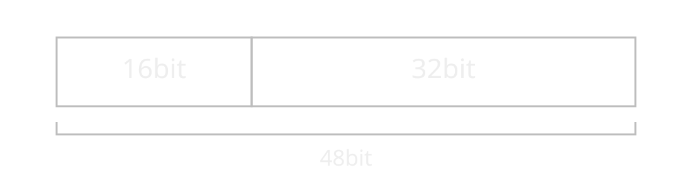
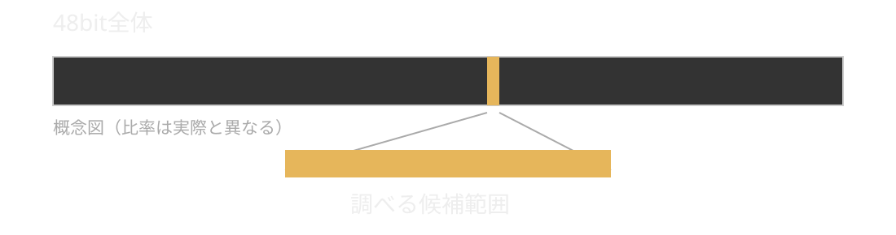
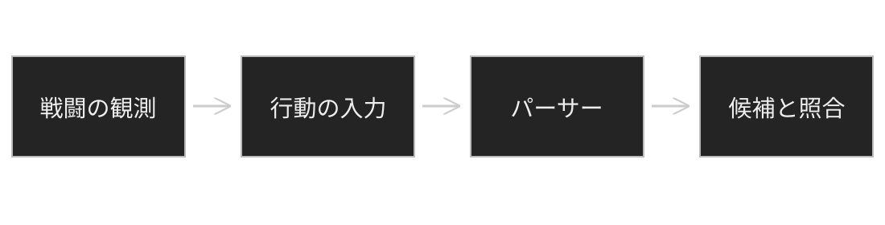
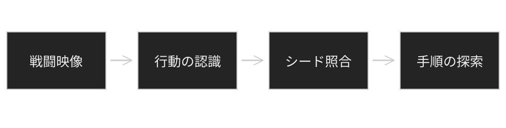

DQ9一人旅RTAの乱数を予測する
DaisukeDaisuke
→ で進む ← で戻る ↓ 補足 ↑ 親ページ
本当に乱数調整はできないのか？
同じ初期状態・同じ処理なら、同じ乱数列になる
DSのタイマーの基準クロック ÷ 64
1秒間に約52万回進む

起動からの経過時間で、値の範囲を絞れる
ゲーム起動時から、タイマーは一定の速さで進む。
約33.5 MHz ÷ 64 ≈ 約52万回 / 秒
初期シードは、このタイマーの値に由来する。
起動から何秒たったかが分かれば、
初期シードの候補範囲を逆算できる。
初期シードは、ゲーム起動から進むタイマーに由来する。
起動からの経過時間が分かれば、候補範囲を推定できる。

48bit全体を総当たりする必要はない！
試作時の14秒から、約1秒での特定へ
↓ 観測結果を入力するパーサー 性能値は元原稿の記録
総当たりのためには、戦闘中に起きた行動をエミュレーターへ入力する必要がある。

イシュダルとパンデルムでは、専用の入力パーサーを作成した。
シードが分かれば、候補の行動列を試せる。
会心の一撃が連続するような行動列を選ぶ。
敵の攻撃タイミングとカウンターを組み合わせる。
人力では思いつきにくい手順も、探索の対象にできる。
元原稿に挙げられたバリアント
バトルエミュレーター最大の敵はカメラである。
カメラはCテーブルに依存せず、
決定論的に動くと思われていた。
しかし、その法則は外部から観測できない。
でも今は2026年でAIがあります！
解析してみましょう。
解析の結果、カメラの処理は完全再現できた。
しかし、row+4がスタックごみを使っているようだ！
同じ行動列でも、違う結果になることがある。
カメラの再現をあきらめかけた。
よく考えてみてください！
そのカメラ候補も、総当たりに含めればいいのでは？
スタックは、関数が一時的な値を置くメモリ。
関数が終わっても、そこに書いた値は残ることがある。
次に同じ場所を使うとき、初期化せずに読むと
前の処理が残した値を拾ってしまう。
row+4では、その値が0かどうかでカメラの分岐が変わる。
行動列が同じでも、残っている値まで同じとは限らない。
終盤は戦闘が速くなり、人間が正確に入力し続けることが難しくなる。

エルギオス戦では映像認識による自動化を実用化した。
実際にRTA走者が40分の短縮を達成した。
↓ イシュダル戦の具体例 勝率・短縮時間は元原稿の報告
seed: 0x85715c7 ／ 探索時間: 692ms ／ 約7億ターン探索（原稿記載値）
| ターン | 味方の行動 | 敵の行動 | 敵HP |
|---|---|---|---|
| 8 | Acrobatic Star | HP Hoover | 262 → 262 |
| 9 | Attack | HP Hoover | 262 → 246 |
| 12 | Attack | HP Hoover | 216 → 154 |
| 16 | Attack（先制） | HP Hoover | 109 → 51 |
| 17 | Dragon Slash（先制） | Puff Puff | 51 → 36 |
| 18 | Attack | Puff Puff | 36 → 0 |
ターン8のアクロバットスターが、
その後の回避・カウンターにつながる布石になる。
↑ RTAへの効果へ戻る 全18ターンのうち6行を抜粋
ありがとうございました。
この環境では全画面表示を開始できません。